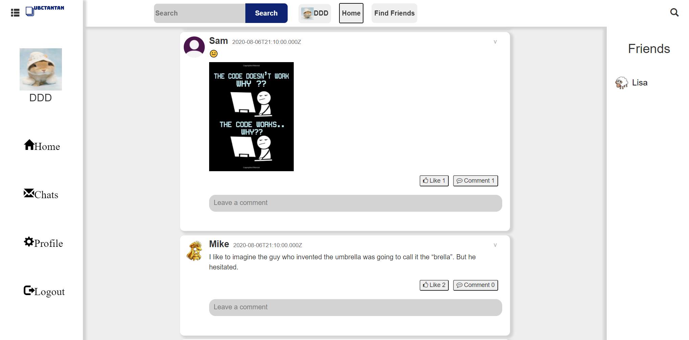

Home

- Developed in a team of four a fully featured social networking web application that allows UBC students to interact with each other
- Features: edit profiles, add time table, share/like/comment/save/hide posts, add/block friends, direct message, group chat, backend monitoring, and friend recommendations (Details can be found in README)
- Implemented RESTful APIs with Express and wrote unit tests that had over 80% code coverage
- Designed database schema and mongoose model interfaces which allows frontend and backend to share the same model interfaces
- Technologies: React, Redux, TypeScript, Node, Express, MongoDB, Mongoose